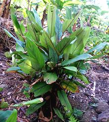

This plant is native to the tropical Americas, where it has been used as food for at least 10,200 years, and cultivated for more than 7,700 years. It is best know for a starch made from long thin rhizomes of young plants, but older, larger rhizomes are harvested to be used similarly to yams. They are fairly neutral in flavor, but noticeably sweet. Arrowroot is now grown commercially through the tropics worldwide. The larger photo specimen was 10-1/2 inches long, 5 inches across and weighed 3 pounds 9-1/4 ounces. It was not the largest in the bin.
The starch is preferred as a thickening agent for some uses because it has unique properties compared to cornstarch and potato starch. Particularly, it is neutral in flavor, will thicken at a lower temperature, freezes without breaking, and will thicken acidic liquids. The starch has been most used as a thickener in English cuisine. In Korea and Vietnam it is made into noodles.
 Arrowroot plants grow to up to 6 feet tall, and are nice garden decoratives, but only in the tropics, only as far north as southern Florida. Arrowroot starch is extracted from the rhizomes of plants about 1 year old, when they are long, narrow, have nearly white skins, and are easy to grind up. Fresh rhizomes for cooking are from older plants, with medium tan skins, but the skins are still very thin. Photo by Fpalli, distributed under license Creative Commons Attribution-ShareAlike 3.0 Unported.
This starch is available from most supermarkets in North America. The flavor is very neutral and it is better for thickening acidic foods than Cornstarch. Its thickening power is as much as 1.5 times Cornstarch, so use less for the same thickening. It will break down from prolonged heat or break quickly if it reaches a boil.
Arrowroot gel freezes well, and will thicken well below the boiling
point so can be used for fragile sauces. It produces a clear sauce,
with an appearance less glossy than cornstarch. Arrowroot should not be
used in dairy based sauces as it turns them slimy. It should be made
into a slurry with cold water before adding to hot liquids, but
smaller amounts can be sprinkled over a finished dish and stirred in
for last minute thickening. Used this way, it will not clump like
cornstarch. Always keep arrowroot thickened soups and sauces below
the boiling point.
These noodles, made in Vietnam, are a bit strange. Just soaked, they have a somewhat unpleasant flavor. Boiled, whether soaked first or not, mere seconds after they are tender they start becoming mush (but the flavor is somewhat better). I can only presume this is supposed to happen to provide a thickening effect in soup they are added to. Ingred: pure flour of arrowroot (arrowroot starch), salt, water. 0.033 diameter, in 1.5 ounce skeins.